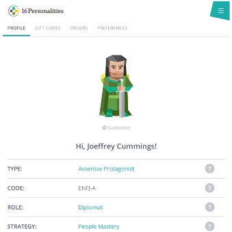

Github: https://s3905546.github.io/COSC2196/index.html
Name: Joeffrey CUMMINGS
Student Number: s3905546
Student Email Address: s3905546@student.rmit.edu.au
I am Filipino heritage and having grown up in Sydney, Australia for most of life since the age of six. I can still understand and have some average level language competency in Tagalog and have a strong understanding of the Korean language as I am married to a Korean wife who communicates with our son in her mother tongue.
I have completed a Diploma in Information Technology, and was an undergraduate of Bachelor of Science, Information Technology but was not able to complete my studies due to focusing on my career, that was over 20 years ago.
What do I do outside of work? I used to be an avid paddler, paddling and coaching in the sports of dragon boat and have since taken up the sport of outrigger canoe. The heart racing part of outrigger canoe is when you are out in the open waters and your boat tips over and it would take you a good 30 to 45 minutes to tip your boat back, empty the water whilst watching for huge surfs or even sharks, this is quite common in the northern beaches of Sydney.
When I am not in the water I do enjoy playing a lot of different sports from golf where I get coached to having fun in the ten pin bowling alleys.
I did not get into Information Technology (IT) initially because of personal interest, it came about due to my starting my Diploma in Electrical Engineering where I got exposed to computer related topics such as programming. This then led to my start of interest in IT, I found the challenge and personal satisfaction in programming code to come out with an outcome. At the time, my interest sparked when I was creating a simple calculator in the language of Visual Basics.
Since then, I have been in the field of IT for about 25 years. I joined as a technical phone analyst, when then lead me to joining a large Global Systems Integrator (GSI) performing a similar role supporting their enterprise customers. A year later, I moved to desktop support performing break/fix services to client, I was fortunate enough to move up as technical consulting then was relocated to Japan for 2 years as contract performing IT Management for the region.
Two years later, I returned and joined as midrange engineer, soon after became the team leader then regional manager for eastern Australia for 3 years. I then moved into a solution architect role for 8 years before relocating to Singapore and worked on large complex deals, deal sizes where I was the Solution Executive ranged from $40M to over $1B. I have won large contracts from BHP Billiton, Rio Tinto, AMP to Asia based accounts in Hong Kong, Singapore and Japan.
After nearly 11 years in pre-sales / solution architecture roles I was promoted to run the solution architecture business unit for ASEAN. I then pivoted to Director of Alliances for a magic quadrant leader in all-flash storage then now moved to a cybersecurity company running the partnership with the large GSIs including PwC, Deloitte, EY, Accenture and many more.
The reason I selected RMIT out of all the available was that I felt it had the best balanced with its strength and high ranking in reducing inequalities. I am also following the university academic ranking and found it is having a good move up the ladder. Personally, I was always curious of what RMIT can offer so here I am in semester one doing the best I can to succeed not only in this course but learn as much as I can from the RMIT professionals.
By enrolling in this course, I aim to learn and excel in the field of Industry 4.0 where I can step up my learnings in blockchain, Artificial Intelligence (AI) and more importantly in the field of cybersecurity. Hopefully during my journey in doing the program of work I can also meet interesting students, teachers and future innovators.
Website: https://www.16personalities.com/
Website: https://www.how-to-study.com/learning-style-assessment
Results: https://www.how-to-study.com/study-skills-articles/visual-learner.asp
Learning Style Assessment
Your preferred learning style is the way in which you learn best. Three learning styles that are often identified in students are:
• Auditory • Visual • Tactile/kinesthetics
Website: https://www.truity.com
Results: https://www.truity.com/personality-test/211/result/13348347
The different personality test gave different answers and outcome, I was not aware that 16Personalities and Truity.com were using the same algorithm but surprise to see the results differed as they were taken a week apart from each other. The how-to-study test was a little simpler as it measured results in three classifications only, I came out as more Visual as opposed to Auditory or Tactile.
The test and results I feel is important as this will help understand team dynamics and how to work in cohesion. I am more suited to work with people that needs leadership and I am eager to coach and mentor and would even look for mentees. By cross checking profiles between team members this will help or avoid conflict caused by direct or indirect actions.
The studies are important to form a team as the people would know the personality type of each individual before they even meet. This will allow prior understanding on how to treat and interact with each other before they even meet. During the collaboration period this will also allow members to better understand each workstyle and hopefully lean on each other’s strengths to come with a strong collaboration and pieces of work.
The project that I would like to explore is in Artificial Intelligence / Machine Learning, where an application to determine the psychology of children at a young age who suffers from dysphemia (or stuttering) and performing enough analysis and determination to provide a recommendation. Based on data already gathered from a global network of speech therapists, we would determine the best guidance or treatment that can be applied at home. Using enough data telemetry, patterns or similar scenarios where a past case has gone through equal but, more importantly, successful treatment.
My motivation for this project is personal, as I went through the stage of stuttering for a more extended period than most children. There was a stage where I would have to replace words that my speech cannot let out with more straightforward terms, which I think prohibited my vocabulary.
As I have history and have managed to overcome the challenges of stuttering, I feel that I can share my learnings and how I overcame the issue and the many solutions I have used to bypass, cheat and beat the problem.
About 5% of children between the age of 2 to 5 suffer from stuttering, some recovering by the age of 7 or 8, and for the less fortunate, that could last much longer and at times the rest of their lives. (The Stuttering Foundation and Frank Wolf. "Stuttering Gets Congress' Attention." Summer 2014 Newsletter. http://www.stutteringhelp.org/content/stuttering-gets-congress%E2%80%99-attention (accessed Nov 12, 2014).
With data from different sources historical from past studies, personal then added with new data telemetry using facial images from children's retina, heartbeat data so other Internet of Things (IoT) devices we might be able to fast track a solution and help children at an early age with the correct prescription.
At the core of this platform will be a data hub where data from many global sources will be gathered and correlated with seeing if patterns exist in people who stutter. Data collected should not have personal information of recipients but instead symptoms and medical data such as age, blood type, retina images, neuroimages, environmental.
"In the Data Integration Hub, often referred to as a Data Hub, data is taken from disparate sources to create a unified view of data. When you hear "customer 360," or a 360-degree view of some entity, people are often referring to a Data Integration Hub." (Types of Data Hub Patterns, Pete Aven, 2019)
We would need an application that is easily accessible by the public, so it cannot be premium; hence the other recommendation of crowdsourcing the development of the code with the data scientist who may already have experience in something similar in the medical, pharmaceutical and life science industry.
With the upcoming introduction of IoT in our lives, children under consultation may be provided with a device that can gather information in real-time, then transferred to a secure data hub supplied by a trusted service provider. This data hub can then be accessed by several types of institutions from speech therapist, medical organisations to help provide a more stable source of truth to help find the right or safe recommendations for those children to practice on.
A sample scenario of a potential prototype is for the IoT device to give a pulse-like effect to the wearer or the device to help calm them down and let them know how to let them flow of speech come out. Another potential could be an earpiece that they could wear, releasing a sound to calm their heartbeat and speak slower, allowing them to release the words.
From my personal experience, I found by slowing down, and breathing helps my speech motor skills catch up with my brain. This then allows me to control what I say in a much-controlled manner. Most stutterers sometimes lose control, and the brain is going much faster than their speech can process. Having a reminder or a signal lets the person know to slow down or calm their heartbeat or other potential control that can help them release the words.
The data hub would require a platform accessible by a global network from the infrastructure level, so an initial recommendation to be hosted on the Cloud. Since data telemetry requires low latency, the advice would be GPU processing and nanosecond latency of storage. As current Public Cloud providers cannot perform such performance, the investment would be via Cloud Fabric. High performance compute and storage is hosted at a Public Cloud Data Centre leveraging cloud fabric technology.
Application-wise, we would need an application that can go through millions of images to find patterns similar to fingerprint matching. Instead of just images, we would also include the inputs mentioned earlier.
Technologies required would be ideally data scientist in the IT industry. Those with healthcare and life science domain knowledge would be ideal as they would have the experience to shorten the discovery and gap findings. The skillset is not very common, so it would be a challenge to find them, and if they are found, they do come with a premium price.
The running of infrastructure will not be tough as hardware these days are turn-key but would still require skill sets who have a strong understanding of the GPU's power and high performing low-latency infrastructure.
Based on the above building block of creating a data hub with relevant data telemetry gathered from a global network of sources, I believe this can help children and adults suffer from stuttering. If the experiment or project is successful, we would expect the government to help fund some of the research and development of both the applications and the IoT devices.
Children or adults wearing these IoT devices powered by the global network, both feeding data and receiving data to help synchronise both the neurological and speech motor skills.